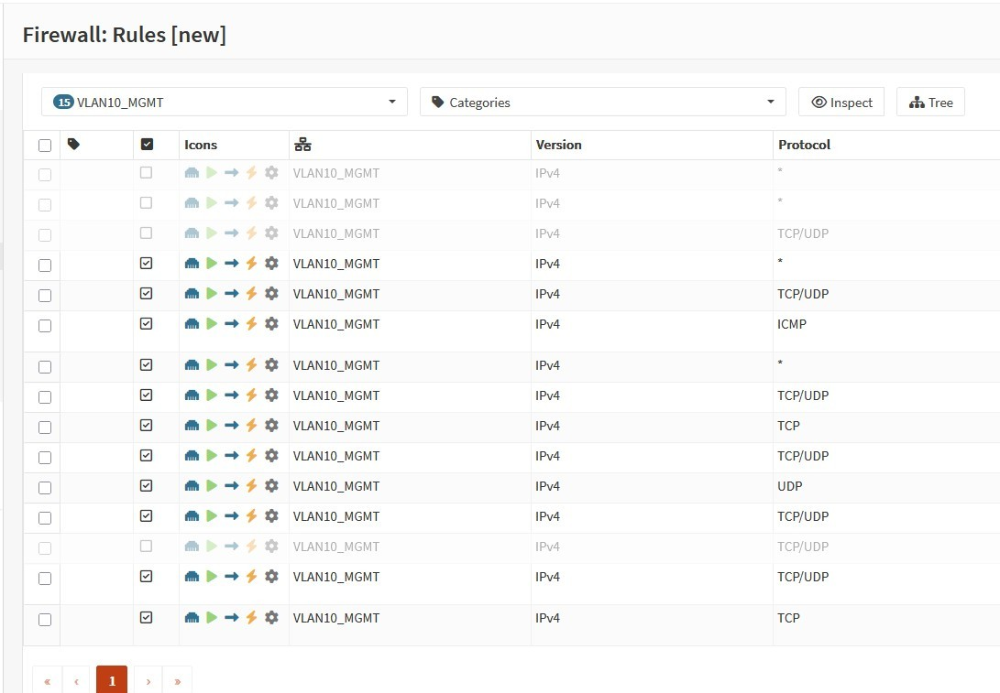

Network security / OPNsense
OPNsense Firewall & VLAN Segmentation
Firewall routing, inter-VLAN access policies, and trust-boundary design across a segmented cybersecurity lab.
Objective
Restrict unnecessary cross-network communication while preserving connections required for lab services.
Implementation
- Configured OPNsense VLAN interfaces and inter-VLAN routing.
- Created explicit allow/deny policies between management, attacker, victim, monitoring, and IoT networks.
- Troubleshot DNS resolution, policy behavior, routing, and connectivity.
- Configured and evaluated remote-access controls.
Outcome
Built a firewall-controlled lab environment for least-privilege network access and segmentation testing. Formal measurements of lateral movement are part of ongoing graduate research.
Architecture
OPNsense provides firewall policies and routing at the network boundary; managed switches enforce VLAN separation at Layer 2. The segmentation design supports isolated testing and controlled access to shared services.
Key technologies
- OPNsense firewall
- VLAN interfaces and policy rules
- DNS and DHCP services
- Cisco switching
- VPN and routing
Configuration evidence
OPNsense screenshots



More technical work
Explore the other systems, networking, and security projects in my portfolio.